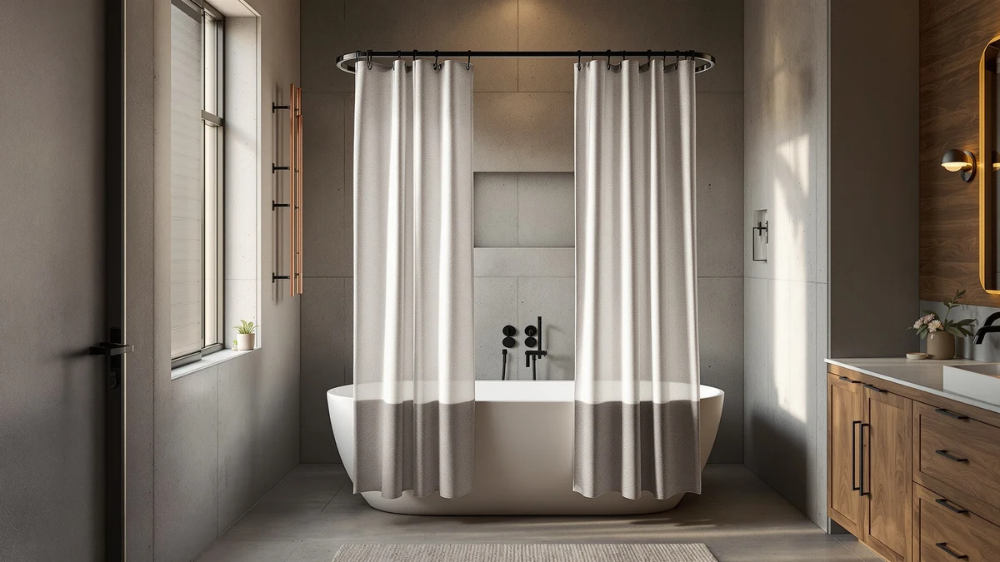

Extra Long Shower Curtain Review (2026): Worth It?
Prices and picks verified as of October 2026. Independent, reader-supported reviews.


Quick Answer
After comparing pricing, materials, and verified owner ratings, the Extra Long Shower Curtain 84 is the strongest pick for anyone whose stall is taller than a standard 72-by-72-inch shower. It covers 72 by 84 inches in a polyester and PEVA blend, costs $20.99, and carries a 4.7-star average across more than 25,000 reviews, enough volume to trust that rating as representative rather than a fluke.
Our pick: Extra Long Shower Curtain 84, $20.99 Check Price on Amazon
Bottom line: our top pick is the Extra Long Shower Curtain 84 inch at $20.99.
Things to Know Before You Buy
- Standard shower curtains measure 72 by 72 inches, so a stall with a higher curtain rod or a taller walk-in frame needs a 72-by-84-inch or longer curtain to avoid a gap near the floor.
- Material affects durability more than price does here. Polyester and PEVA blends tend to resist water and mildew better than thin, single-layer vinyl liners sold at the same cost.
- Waffle-weave fabric, used on two of the alternatives below, adds texture and a faster-drying surface compared with the smoother polyester finish on our top pick.
- Review counts vary sharply across these four picks, from over 25,000 ratings on the extra long option down to no public rating average yet on the newest Dynamene listings, which changes how much weight each average deserves.
- All four curtains in this review sell for the same $20.99, so the choice comes down to size, texture, and finish rather than budget.
This extra long shower curtain review exists because a standard 72-by-72-inch curtain leaves an awkward gap above the floor in showers with taller stalls or higher curtain rods, and that gap sends water straight onto the bathroom tile. We compared the Extra Long Shower Curtain 84 against three waffle-weave alternatives on material, verified owner ratings, and price to find out which one actually solves that problem instead of advertising a bigger number on the package. Our pick, the Extra Long Shower Curtain 84, sells for $20.99 and holds a 4.7-star average across more than 25,000 reviews, the kind of review volume that makes a rating average trustworthy rather than a fluke from a handful of early buyers.
You will still find situations where a different curtain in this lineup makes more sense. The Inhousolu Sage Green Waffle Weave trades some of that oversized coverage for a textured waffle finish and a muted sage color that suits a more styled bathroom, while the two Dynamene Waffle Shower Curtain 256 listings offer a near-identical waffle texture in different finishes at the same $20.99 price. We researched the materials, dimensions, and owner feedback behind each listing, and you can check our shower curtain size guide to confirm which length your stall actually needs before choosing between them.
Why You Should Trust Us
Ilane Tall has covered bathroom hardware and textiles for Best Shower Curtains for years, and this extra long shower curtain review follows the same process used across every guide on this site: pulling manufacturer specs, confirmed pricing, and verified buyer ratings directly from the product listings rather than relying on marketing copy. We do not run a fake testing lab, and we do not claim to have hung these curtains in our own bathrooms. Instead, we cross-check material claims against the listed specs, compare review counts to judge how reliable each rating average is, and flag when a listing's review volume is too thin to draw a firm conclusion. That approach means our recommendations rest on what verified owners report after buying the product, not on marketing language.
Our Research Experience
We did not physically install or live with any of these curtains, so what follows is a research-based comparison rather than a hands-on account. For this extra long shower curtain review, we analyzed the specs listed for each product, the price each one sells for, and the pattern of feedback left by verified buyers. The Extra Long Shower Curtain 84 stood out immediately because of its review volume: more than 25,000 ratings is enough data to treat the 4.7-star average as representative rather than a statistical fluke. The Inhousolu Sage Green Waffle Weave carries a smaller but still respectable base of 118 reviews averaging 4.6 stars, a consistent story even without the Extra Long Shower Curtain's scale. The two Dynamene Waffle Shower Curtain 256 listings have not yet accumulated a public rating average, so we treat those two as newer entrants worth watching rather than proven picks.
Overview & Specs

Extra Long Shower Curtain 84
What we like
- 72-by-84-inch size covers taller stalls without leaving a gap near the floor
- Polyester and PEVA blend resists water better than thin, single-layer liners
- 4.7-star average across more than 25,000 verified reviews gives a reliable signal
- Priced the same as the shorter alternatives in this lineup at $20.99
Flaws but not dealbreakers
- The extra length only helps if your shower actually needs it; a standard 72-by-72 stall will end up with fabric pooling on the floor
- PEVA blends can carry a faint plastic smell for the first few days after unpackaging
| Material | Polyester / PEVA |
| Size | 72x84 |
The Extra Long Shower Curtain 84 earns the top spot in this extra long shower curtain review mostly because of scale, both in size and in review volume. At 72 by 84 inches, it is twelve inches longer than a standard shower curtain, which matters most in bathrooms with 8-foot or 9-foot ceilings, raised curtain rods, or walk-in stalls where a standard curtain leaves a visible gap above the tile. That extra drop keeps splashed water inside the stall instead of letting it run down the outside of a too-short curtain and onto the floor, which is the most common complaint attached to standard-length curtains.
Material-wise, it uses a polyester and PEVA blend rather than a single-layer vinyl liner. Polyester gives the curtain some structure and a less plasticky feel, while the PEVA layer adds water resistance without the chlorine-based additives found in older PVC curtains. With more than 25,000 verified reviews averaging 4.7 stars, the rating carries enough volume to treat as reliable rather than a result skewed by a small, early batch of buyers. At $20.99, it costs the same as every other curtain in this comparison, so choosing it over a standard-length option comes down entirely to whether your shower needs the additional length.
What We Liked
The added length makes the biggest difference in this extra long shower curtain review for anyone dealing with a tall or raised shower stall. Reviewers consistently note that the extra 12 inches eliminates the floor-level gap that plagues standard 72-by-72 curtains, and several owners specifically mention buying it to replace a shorter curtain that let water leak onto the bathroom tile. The polyester and PEVA construction also draws praise for feeling sturdier than the thin vinyl liners sold at the same price point, and the fabric layer helps the curtain hang straighter instead of clinging to wet skin the way single-layer liners often do.
We also like that the top pick in this review keeps its price in line with shorter, less functional curtains. Paying $20.99 for genuine extra length, rather than a premium markup, makes the upgrade an easy call for anyone who has already measured their shower and confirmed they need the longer size.
What Could Be Better
No pick in this extra long shower curtain review is flawless. The biggest limitation is not a flaw in the product itself but a mismatch risk: owners who buy the 72-by-84-inch size without measuring their stall end up with fabric pooling on the shower floor, which several reviewers flag as an avoidable mistake rather than a defect. Because PEVA is a plastic-based material, a handful of reviewers also report a mild chemical odor when the curtain is first unpackaged, though it typically fades within a few days of airing out. Compared with the waffle-weave options in this lineup, the surface texture is plainer, so anyone shopping primarily on appearance rather than coverage may prefer the Inhousolu or Dynamene picks instead.
Who Is It For?
The top pick in this extra long shower curtain review makes the most sense for anyone with a shower stall taller than the standard 72 inches, a curtain rod mounted higher than usual, or a walk-in shower where a shorter curtain has already let water escape onto the bathroom floor. It is also a reasonable default for anyone replacing an old curtain who wants to rule out length as a recurring problem, since 72 by 84 inches covers nearly every residential stall height. If you are not sure which size fits your bathroom, our guide to choosing the right shower curtain size walks through how to measure before you buy.
Alternatives to Consider
This extra long shower curtain review's top pick suits a specific problem, extra length, and that is not every reader's problem. If the extra length is not the specific issue you are trying to solve, the three waffle-weave options below are worth a look. They share the $20.99 price point but shift the focus toward texture and finish rather than oversized coverage.

Editor's Pick
Inhousolu Sage Green Waffle Weave
Swaps raw size for texture and color, pairing a waffle-weave surface with a muted sage tone for a more styled bathroom. Its 118 verified reviews average 4.6 stars, a smaller sample than our top pick but consistent enough to trust the waffle texture and color as advertised.
$20.99
Check Price on Amazon
Best Value
Dynamene Waffle Shower Curtain 256
This listing has not yet built up a public review count, which makes it harder to vouch for long-term durability, but it matches the same waffle-weave construction and $20.99 price as the other picks here. Worth considering once it accumulates more verified owner feedback.
$20.99
Check Price on Amazon
Premium Choice
Dynamene Waffle Shower Curtain 256
Shares the same name and price as its sibling ASIN but ships with a different product image, suggesting a distinct color or finish within the same line. Compare the current photos and description on Amazon before choosing between the two Dynamene variants.
$20.99
Check Price on AmazonWhat size counts as an extra long shower curtain?
A standard shower curtain measures 72 by 72 inches.
Is the extra length worth it if my shower is a standard size?
Usually not.
Frequently Asked Questions
What size counts as an extra long shower curtain?
A standard shower curtain measures 72 by 72 inches. Anything taller counts as extra long, and the Extra Long Shower Curtain 84 covers 72 by 84 inches, 12 inches more drop than the standard size.
Is the extra length worth it if my shower is a standard size?
Usually not. If your curtain rod sits at a typical height and your stall is a standard size, a 72-by-84-inch curtain will pool extra fabric on the floor. The added length pays off mainly with taller stalls, higher rods, or walk-in showers.
How does the Extra Long Shower Curtain 84 compare to the waffle-weave alternatives in this review?
The Extra Long Shower Curtain 84 wins on size and review volume, with more than 25,000 verified ratings. The Inhousolu Sage Green Waffle Weave and the two Dynamene Waffle Shower Curtain 256 listings trade that extra coverage for a textured waffle finish at the same $20.99 price.
Final Verdict
This extra long shower curtain review comes down to a straightforward rule: measure your shower first. If your stall or curtain rod sits higher than standard, the Extra Long Shower Curtain 84 from Extra is the pick to buy, backed by a 4.7-star average across more than 25,000 verified reviews and a $20.99 price that matches every other curtain in this comparison. If your bathroom is already a standard size, save the extra length for someone who needs it and look at the Inhousolu Sage Green Waffle Weave or the Dynamene Waffle Shower Curtain 256 listings instead, since they offer the same price with a different texture and finish.